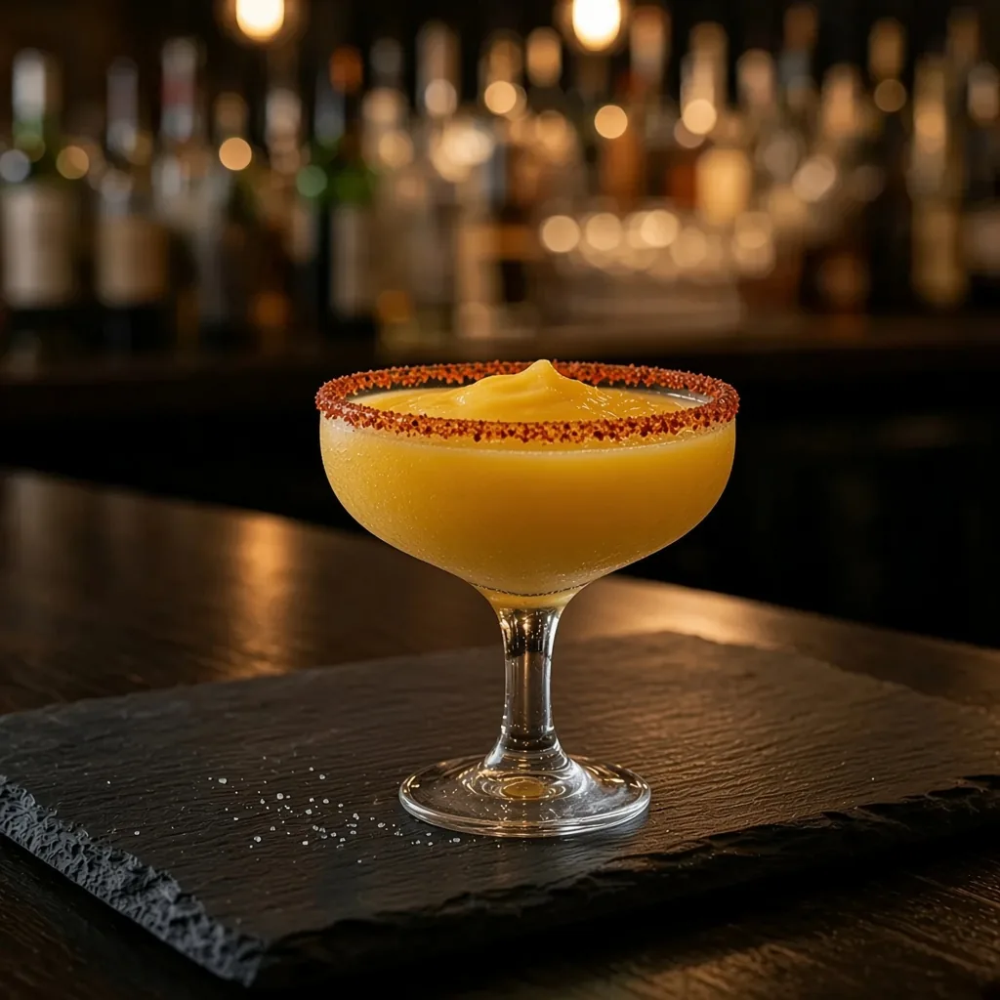
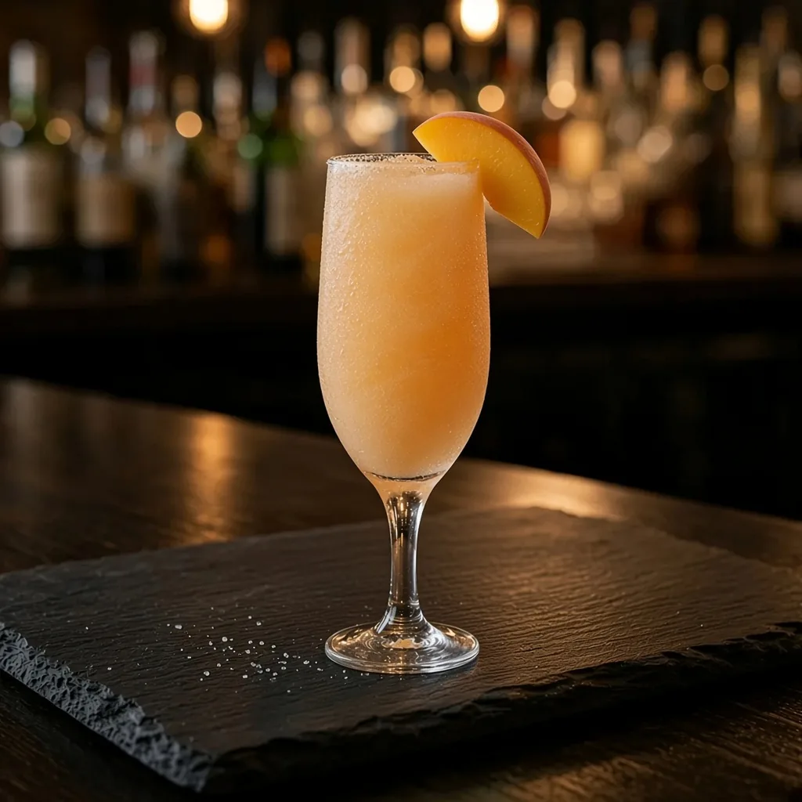
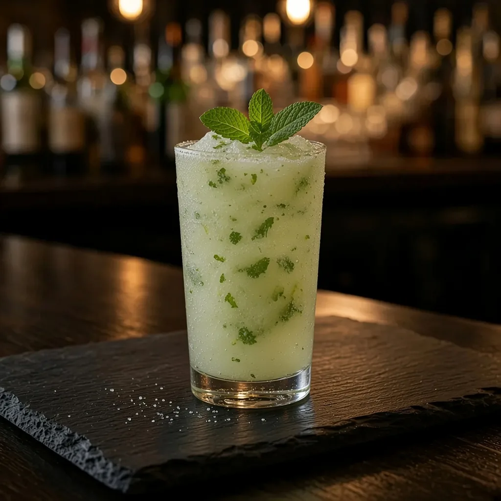
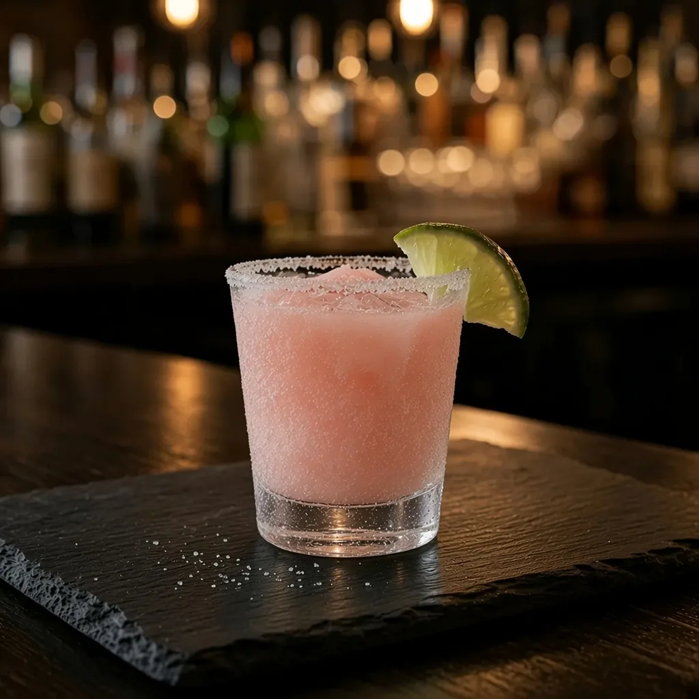
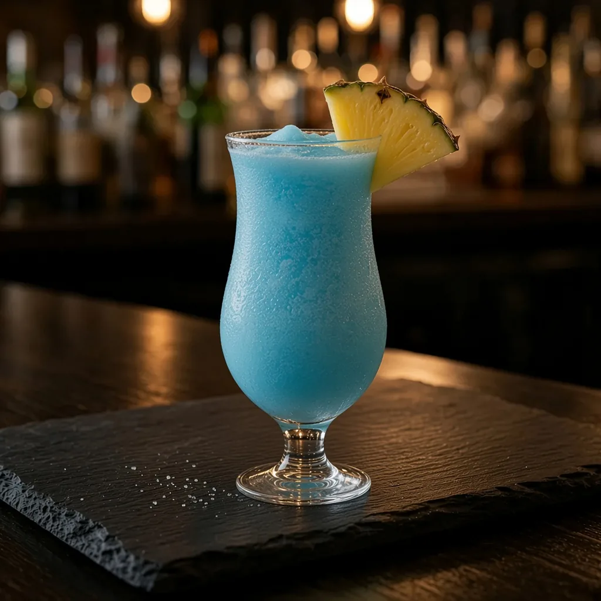

Home / Drinks / Frozen drinks
Frozen Mango Margarita
Frozen mango makes this thick and sweet, and a chili-lime rim sets it off.

Home / Drinks / Frozen drinks
Frozen mango makes this thick and sweet, and a chili-lime rim sets it off.

Replace the tequila and orange liqueur with 5 oz orange juice.
Pour it, then start a room. Drinking is optional in every game.

Frozen Peach BelliniFrozen peaches and prosecco. A brunch drink that takes five minutes.
Frozen MojitoAll the mint and lime of a mojito, blended into a slush.
Frozen PalomaTequila and grapefruit as a pink slush with a salted rim.
Frozen Blue HawaiianA blue piña colada: rum, blue curaçao, coconut and pineapple.